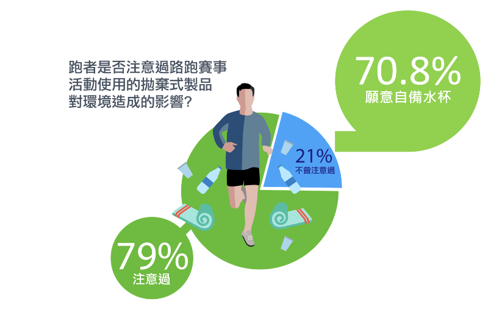

作者：綠色和平「無拘無塑」專案負責人羅可容
臺灣人瘋路跑，從運動知名網站「運動筆記」登錄的賽事統計，光是2017年就舉辦了784場路跑賽事，保守估計使用了400萬個免洗杯、發送了300萬件的賽事紀念衫。紀念衫以合成纖維製成，是塑膠纖維的一種，加上紀念衫包裝，至少又使用了300萬個塑膠包裝袋。路跑運動原是美事一樁， 賽事中卻累積了無數的「塑膠里程」，破壞了環境的永續健康。
臺灣人瘋路跑，從運動知名網站「運動筆記」登錄的賽事統計，光是2017年就舉辦了784場路跑賽事，保守估計使用了400萬個免洗杯、發送了300萬件的賽事紀念衫。紀念衫以合成纖維製成，是塑膠纖維的一種，加上紀念衫包裝，至少又使用了300萬個塑膠包裝袋。路跑運動原是美事一樁， 賽事中卻累積了無數的「塑膠里程」，破壞了環境的永續健康。

紀念衫毛巾用不到，選配才是王道
調查中也發現，活動紀念衫、毛巾的使用率很低。跑者在了解塑膠纖維對環境的破壞後，近四成支持主辦單位停止發放合成纖維類的贈品，近六成支持贈品以選配方式讓跑者自行決定。對於賽事發送的物資，愈來愈多人回歸理性，從需要面出發，開始思考讓興趣與環保兼顧的解決方案。
九成跑者認同環保賽事，可提升市民榮譽感
高達九成以上的跑者說，他們願意支持將環保理念納入賽事規劃的路跑活動。也有85%的跑者認為，若地方政府主辦環保永續的運動賽事，可以提升城市形象與市民榮譽感。
跑步為生活紓壓，也為環境減壓！
跑者對於永續賽事的高度認同，讓推動永續運動賽事在臺灣落實，有更大希望。繼臺北市承諾在今年底的臺北馬拉松採用減塑方案，綠色和平將持續向主辦方及跑者倡議，讓綠色永續的觀念成為全民運動的一部份，不僅讓身體健康，也找回環境健康。